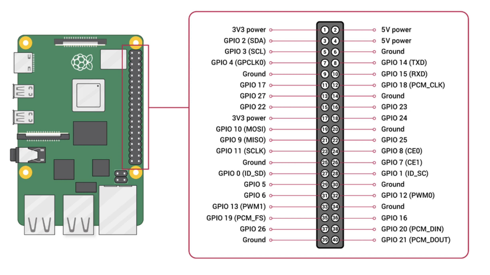

Pinout & Connections
Where every signal goes: which Raspberry Pi pins the boards use, the I2C addresses, and what each connector of the Corridor Board and the Box Board does. It is taken from the design files of the boards (see List of Parts & Design Files).
GPIO pins are given by their BCM number (as in the settings and the code), with the physical position on the 40-pin header in parentheses.
Raspberry Pi Header


BCM (pin) |
Function |
Used by |
|---|---|---|
GPIO2 (3) |
I2C SDA (bus 1) |
Main HAT, to both satellite boards. Also the Audio HAT (an I2C bus can be shared) |
GPIO3 (5) |
I2C SCL (bus 1) |
Same as GPIO2 |
GPIO10 (19) |
SPI0 MOSI ( |
Main HAT, to the LED strip connector of the Box Board |
GPIO15 (10) |
UART RX ( |
Main HAT, from the RFID reader of the Corridor Board |
GPIO26 (37) |
|
Main HAT, from the Switch connector of the Box Board |
GPIO27 (13) |
|
Free: not wired by the Main HAT. The Audio HAT only routes it to its P1 connector (see the note below) |
GPIO18, 19, 20, 21 (12, 35, 38, 40) |
I2S (digital audio) |
Audio HAT (Raspberry Pi DAC Pro) |
GPIO7, 8, 9, 11 (26, 24, 21, 23) |
SPI0 CE1, CE0, MISO, SCLK |
Not wired by any board, but taken by the SPI interface enabled for the LED strip |
GPIO14 (8) |
UART TX |
Not wired by any board, but taken by the serial port enabled for the RFID reader |
GPIO0, 1 (27, 28) |
HAT ID EEPROM |
Reserved by Raspberry Pi for the identification EEPROM of HATs |
GPIO12, 13 (32, 33) |
Hardware PWM |
Only with the old HAT ( |
Free pins: GPIO4 (7), GPIO5 (29), GPIO6 (31), GPIO12 (32), GPIO13 (33), GPIO16 (36), GPIO17 (11), GPIO22 (15), GPIO23 (16), GPIO24 (18) and GPIO25 (22). All the pins of the header are also available on top of the HAT stack (see GPIO).
Note
According to the official documentation of the Raspberry Pi DAC Pro, its P1 connector
(the line output) “carries GPIO27, MUTE signal (headphone detect)”. The DAC Pro does
not drive GPIO27: with it mounted, the pin follows the Raspberry Pi’s own pull-up and
pull-down resistors (checked with pinctrl), so it can be used as GPIO_OUT. Just
leave the GPIO27 pin of the P1 connector unconnected.
The power pins of the header (5 V, 3.3 V and GND) are not listed. The Main HAT and the satellite boards take their power from the 5 V supply connected to the Main HAT.
I2C Bus
All the I2C devices share bus 1 (GPIO2/3). The Main HAT carries it to both satellite boards through the Ethernet cables. On each board, a PCA9306 level translator connects it to the PWM chip, which runs at 5 V.
Address |
Device |
Board |
Setting |
|---|---|---|---|
0x44 |
Temperature and humidity sensor (SHT31) |
Corridor |
|
0x48 |
Scale ADC (ADS1114) |
Corridor |
|
0x49 |
Scale ADC (ADS1114), optional box scale |
Box |
|
0x4C |
DAC chip (PCM5242), optional |
Audio HAT (DAC Pro) |
|
0x55 |
PWM chip (PCA9685): motors and lights |
Corridor |
|
0x6A |
PWM chip (PCA9685): motors and lights |
Box |
|
The addresses are set by the boards (address pins wired on the PCB): the settings only
tell the software where to find each device. When the bus is scanned
(i2cdetect -y 1):
0x4C shows as
UU: the address is in use by the sound driver, so it is not probed.0x70 also appears: both PCA9685 answer at this address too, their “all call” address, enabled by default. It is not used.
Main HAT
Connector |
Function |
|---|---|
J8 |
40-pin header, to the Raspberry Pi |
J7 |
Power input (5 V) |
J1, J3 |
Power outputs to the satellite boards, each with its own 5 A fuse (F1, F2). Both carry the same supply: either one can go to either board |
J2 ( |
Ethernet connector to the Box Board (J1) |
J4 ( |
Ethernet connector to the Corridor Board (J8) |
The Ethernet connectors carry I2C and the other signals, not a network. Each pin of the connector on the Main HAT goes to the same pin of the connector on the satellite board, so standard (straight) Ethernet cables are used.
RJ45 pin |
To the Box Board (J2) |
To the Corridor Board (J4) |
|---|---|---|
1, 3, 5, 7 |
GND |
GND |
2 |
I2C SCL |
RFID data (to GPIO15) |
4 |
I2C SDA |
I2C SCL |
6 |
LED strip data (from GPIO10) |
I2C SDA |
8 |
Switch (to GPIO26) |
Not connected |
Corridor Board
The labels are the ones printed on the board. The PWM channels are those of its PCA9685
(0x55), set in the code (MOTOR1_CORRIDOR_INDEX, …, in village/settings.py; they
are not shown in SETTINGS).
Connector (label) |
Function |
PWM channel |
|---|---|---|
J8 ( |
Ethernet connector, from the Main HAT (J4) |
|
J10 |
Power input (5 V), from the Main HAT |
|
J4 ( |
RFID reader: 3.3 V supply, and its data to GPIO15 |
|
J6 ( |
Load cell of the corridor scale |
|
J5 ( |
Motor 1: door 1, the one closer to the home cage |
7 |
J2 ( |
Motor 2: door 2, the one closer to the operant box |
6 |
J3 ( |
Motor 3 (optional) |
5 |
J9 ( |
Motor 4 (optional) |
4 |
J1 ( |
Visible light, switched by a MOSFET |
8 |
J7 (8-way terminal block) |
Infrared lights: 4 outputs, each a |
0 to 3 |
The temperature and humidity sensor (SHT31) is mounted on the board itself.
Box Board
The PWM channels are those of its PCA9685 (0x6A), set in the code (MOTOR1_BOX_INDEX,
…).
Connector (label) |
Function |
PWM channel |
|---|---|---|
J1 |
Ethernet connector, from the Main HAT (J2) |
|
J12 |
Power input (5 V), from the Main HAT |
|
J3 ( |
Motor 1 |
4 |
J9 ( |
Motor 2 |
5 |
J4 ( |
Motor 3 |
6 |
J5 ( |
Motor 4 |
7 |
J6 ( |
Motor 5 |
8 |
J11 ( |
Motor 6 |
9 |
J8 ( |
Motor 7 |
10 |
J2 ( |
Visible light, switched by a MOSFET |
11 |
J7 (8-way terminal block) |
Infrared lights: 4 outputs, each a |
0 to 3 |
J10 ( |
Addressable LED strip: |
|
J13 ( |
Switch: 3.3 V and the switch signal, to GPIO26 ( |
|
J14 |
Load cell of the optional box scale |
The servo connectors have the pins − (GND), + (5 V) and S (signal), on both boards.
The infrared outputs have inverted logic (the − side is switched to ground), which the
software takes into account.
A switch on J13 connects the 3.3 V pin to the signal pin when it is activated, so
GPIO_IN_PULL must be DOWN (the default) (see GPIO).
Cameras and USB
Device |
Where |
|---|---|
Box camera |
One of the two camera connectors of the Raspberry Pi 5: camera 0 for the software ( |
Corridor camera |
The other camera connector: camera 1 ( |
Behavioral controller (Bpod, Arduino…) |
The bottom USB port next to the Ethernet jack, which the system links to |
Head-Fixed Board (optional) |
Any USB port: it is found automatically (see Head-Fixed Board) |